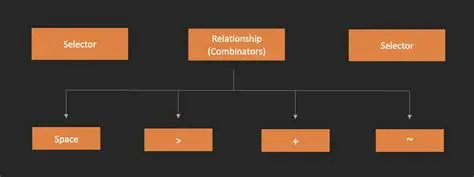

Selektory

| selektor |
wyjaśnienie |
* |
Wybiera wszystkie elementy. |
znacznik |
Wybiera elementy reprezentowane takim znacznikiem. |
#id |
Wybiera elementy z określonym id, np. <p id="id"> |
.class |
Wybiera elementy określonej klasy, np. <p class="class"> |
:pseudoclass |
Wybiera elementy wybrane za pomocą tzw. pseudoklasy. Każda pseudoklasa uaktywnia się w ściśle określonych okolicznościach. Pseudoklasy mogą być definiowane i wywoływane tylko przez przeglądarkę. |
Selektory atrybutów
| selektor |
wyjaśnienie |
[atrybut] |
Wybiera wszystkie elementy z danym atrybutem. |
[atrybut=wartość] |
Wybiera wszystkie elementy z danym atrybutem ustawionym na daną wartość. |
[atrybut~=słowo] |
Wybiera wszystkie elementy z danym atrybutem zawierającym dane słowo. |
[atrybut|=wartość] |
Wybiera wszystkie elementy z danym atrybutem ustawionym na wartość lub zaczynającym się od wartość + - |
[atrybut^=wartość] |
Wybiera wszystkie elementy z danym atrybutem zaczynającym się na daną wartość. |
[atrybut$=wartość] |
Wybiera wszystkie elementy z danym atrybutem kończącym się na daną wartość. |
[atrybut*=wartość] |
Wybiera wszystkie elementy z danym atrybutem zawierającym daną wartość. |
Kombinatory

| kombinator |
wyjaśnienie |
zn1 zn2 |
Wybiera wszystkie elementy zn2 będące potomkami zn1. |
zn1 > zn2 |
Wybiera wszystkie elementy zn2 będące bezpośrednimi dziećmi elementu zn1. |
zn1, zn2 |
Wybiera zarówno elementy zn1, jak i elementy zn2. |
zn1 + zn2 |
Wybiera elementy zn2 które są po elementach zn1. |
zn1 ~ zn2 |
Wybiera elementy zn2 które są przed elementami zn1. |
Co to selektory?
Selektory służą do określenia, właściwości których elementów zostają zmienione przez regułę CSS.
Na przykład, jeśli chcemy, by nasza reguła CSS odnosiła się do elementów <p>, to wpisujemy p przed {...}.